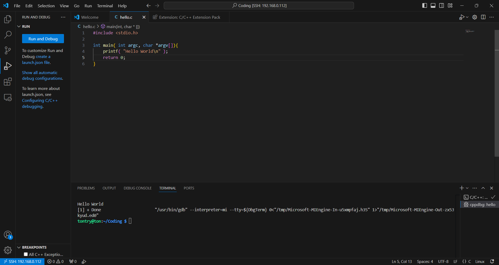

Setup: Connect VS Code to Raspberry Pi using SSH
-
Install VS Code Extensions.
Ensure you have installed the following extensions:
- Remote - SSH: For connecting to your Raspberry Pi.
- C/C++: For syntax highlighting and IntelliSense for C/C++ code.
-
Connect to Raspberry Pi via SSH.
Open VS Code, press
Ctrl+Shift+P, and select Remote-SSH: Connect to Host. Enter the SSH connection string, e.g.,pi@.
Task 1: Write and Compile C Code on Raspberry Pi
-
Create a C program on Raspberry Pi.
Inside VS Code, create a file named
hello.con the Raspberry Pi:#include <stdio.h> int main() { printf("Hello, World!\\n"); return 0; } -
Compile the program on Raspberry Pi.
Open the integrated terminal in VS Code (using the SSH connection to Raspberry Pi) and run the following command to compile the C file using GCC:
gcc hello.c -o hello -
Run the compiled program.
Once compiled, run the program directly in the terminal:
This should output: Hello World!
Troubleshooting
-
Issue: SSH connection fails.
Solution: Ensure SSH is enabled on Raspberry Pi by runningsudo raspi-configand selecting Interfacing Options > SSH. -
Issue: Compilation errors.
Solution: Verify that GCC is installed on Raspberry Pi by runninggcc --version. If not installed, usesudo apt install gcc.